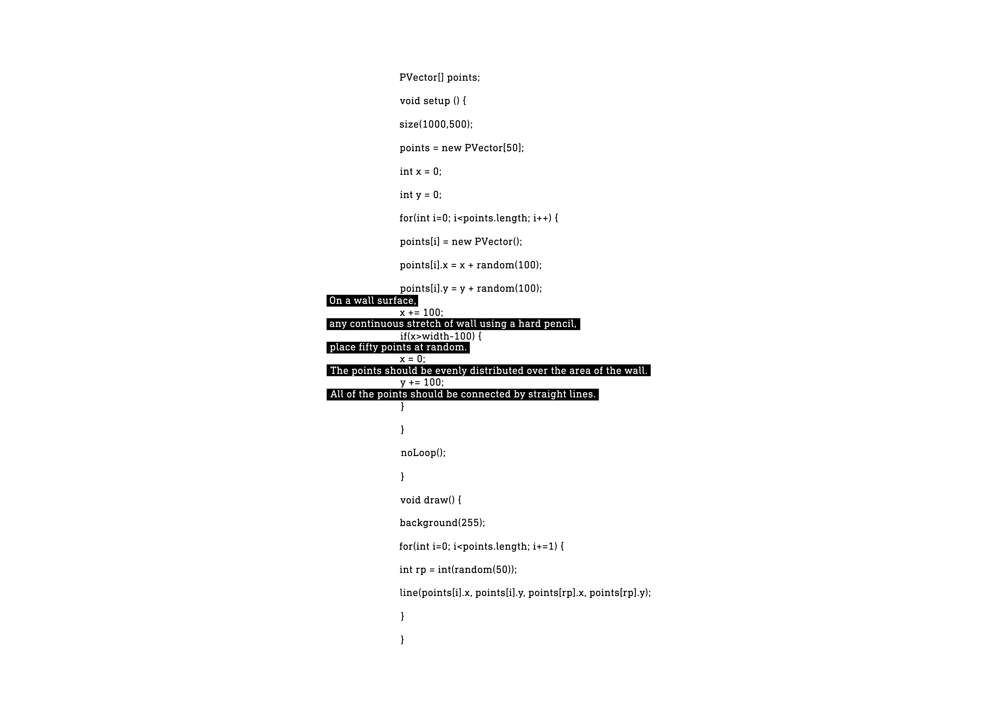
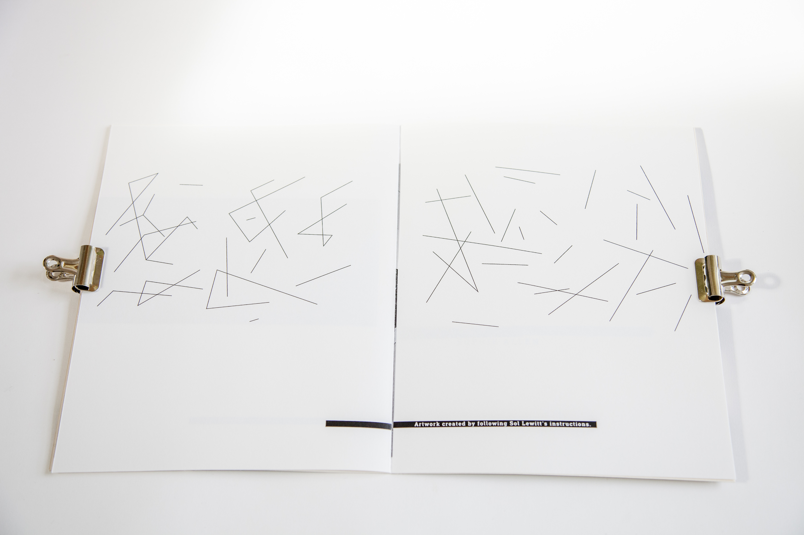
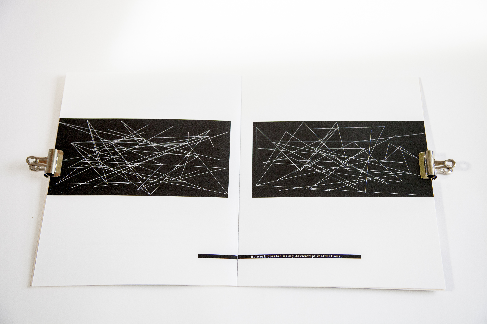
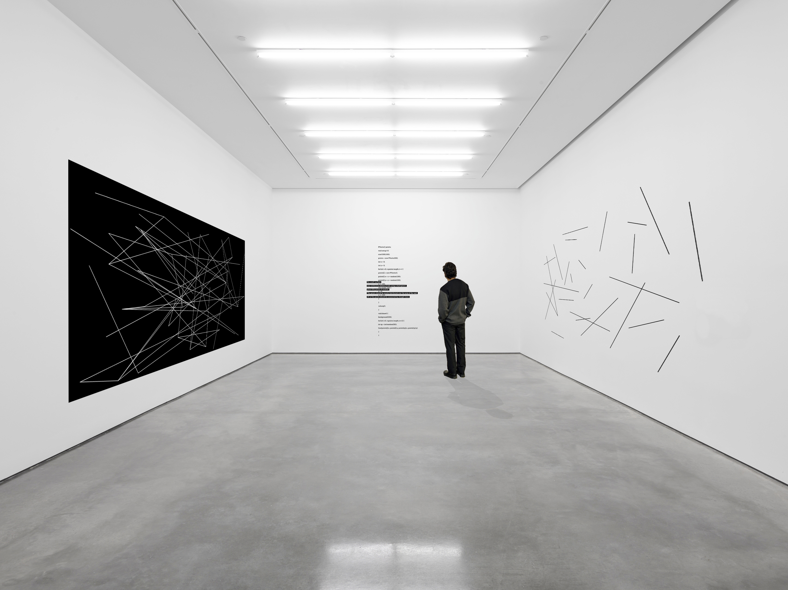
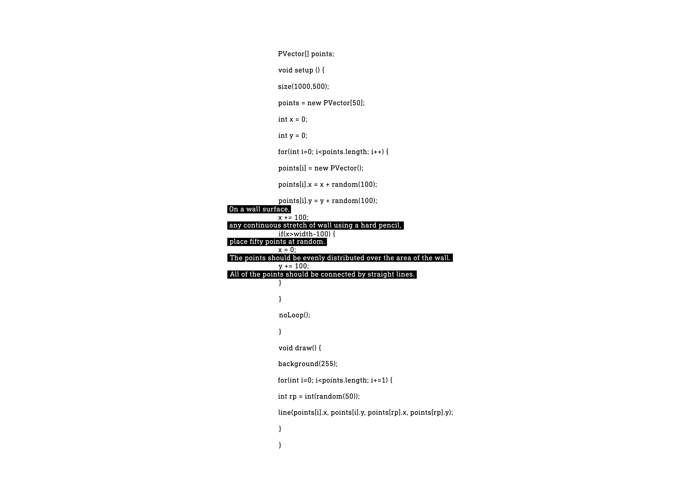
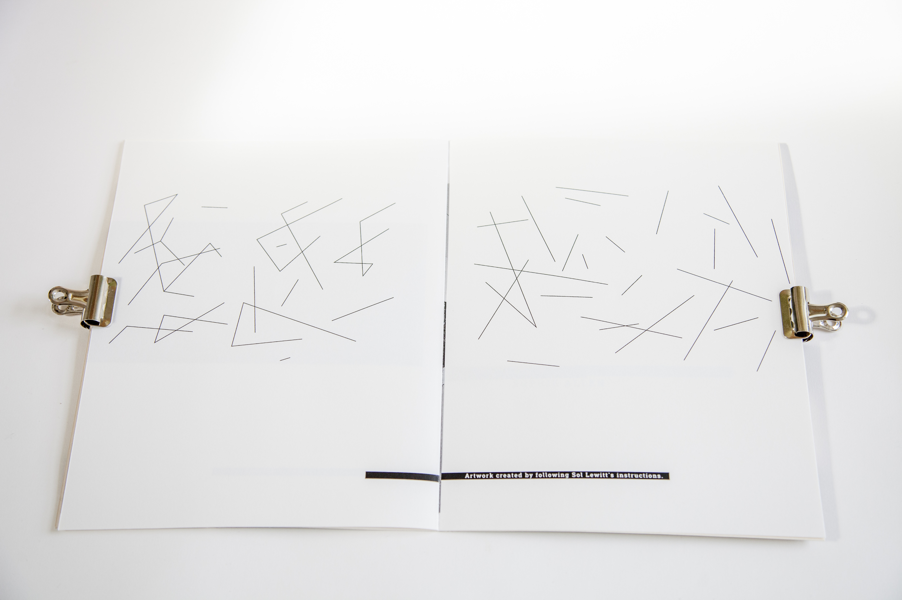
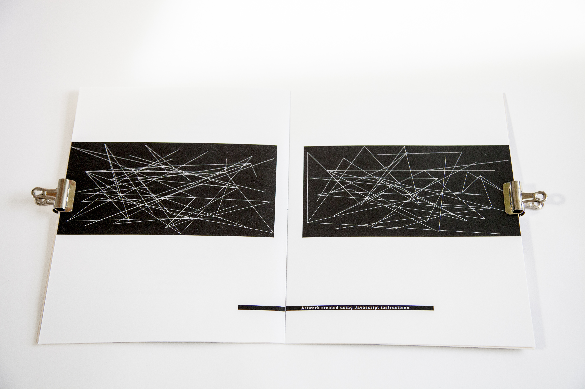
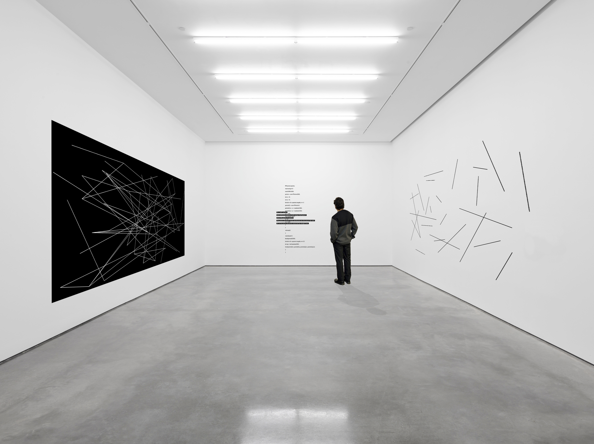

The Rhetoric of Ekphrasis’ - Typographically explore the descriptive nature of text – translations of the visual to the textual, vice-versa and onwards. Find a major work of visual art and a text that responds to it. Typographically explore how the written word construes, infers, adapts, subjugates or enhances the original
My final outcome was an exhibition that explores the way in which we interpret a set of instructions by dividing a gallery space in two. Written instructions in Sol Lewitt’s work allow for the interpretation of language, which is shown through a variation in visual output. This exhibition examines the way in which computers can also interpret an instruction with the allowance of variation; although reading the same set of instructions, two different pieces of work would be produced. Thus proving that programming can be treated as conceptual art. I presented the concept in the form of 2 books, one showing the research and design development, the other showing a mock up of the exhibition and artwork created using javascript instructions for Sol Lewitt’s wall drawing #118. The cover features a section of the 2 instructions as a wall piece in the gallery, to scale.
- Deliverables: Concept
- Award: International Society of Typography Designers 2015 competition brief - shortlisted
 






